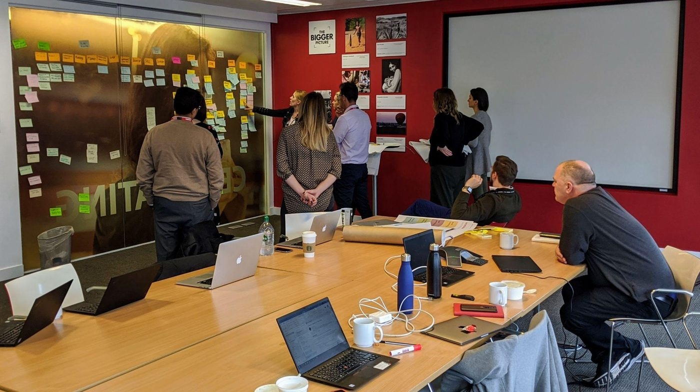

The Challenge
Diageo One, a complex B2B portal, was burdened by legacy back-end technology. The scope required mapping workflows across On-Trade (bars, restaurants) and Off-Trade (retail) sectors, targeting fragmented B2B invoicing, ordering and financing touchpoints.
The Approach
- Future-back strategy. Co-created a long-term customer-experience vision, anchoring tech requirements to real user needs rather than legacy constraints.
- Global alignment. Brought international market leaders to London for an intensive, week-long design-thinking workshop.
- Gap analysis. Ran rigorous user research and data analysis to map current-state friction against the future vision.
The Impact
- Unified roadmap. Delivered a phased global transformation roadmap bridging immediate tech fixes with long-term feature releases.
- Redesign blueprint. Established the foundational service-design framework and UX architecture for the full platform overhaul.
- Cross-functional buy-in. Aligned global market stakeholders and delivery teams around one data-backed vision for B2B customer excellence.
